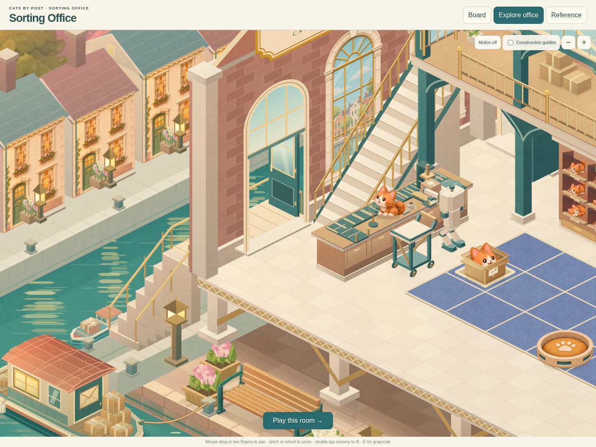
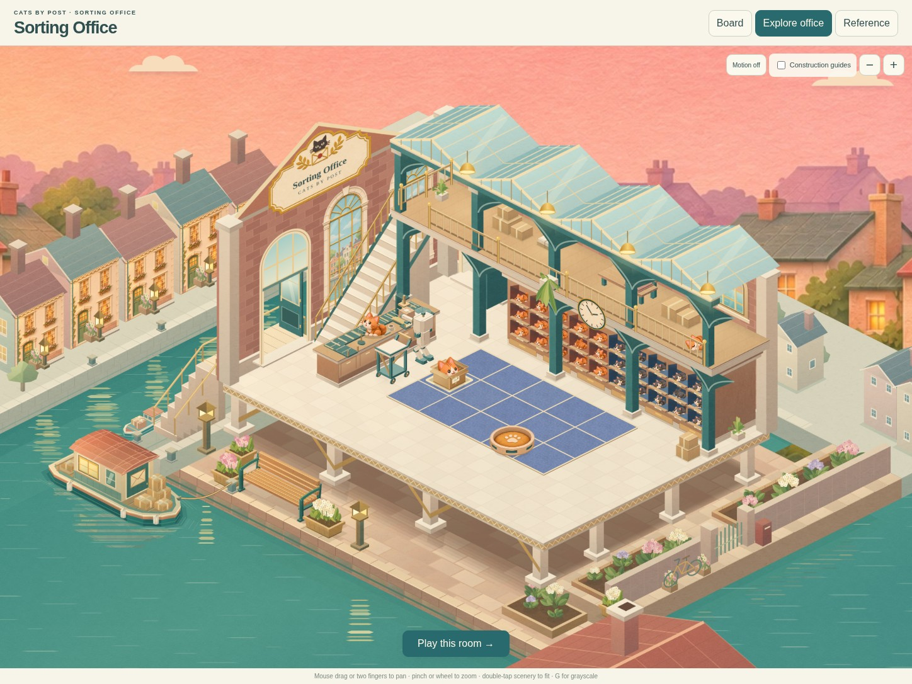
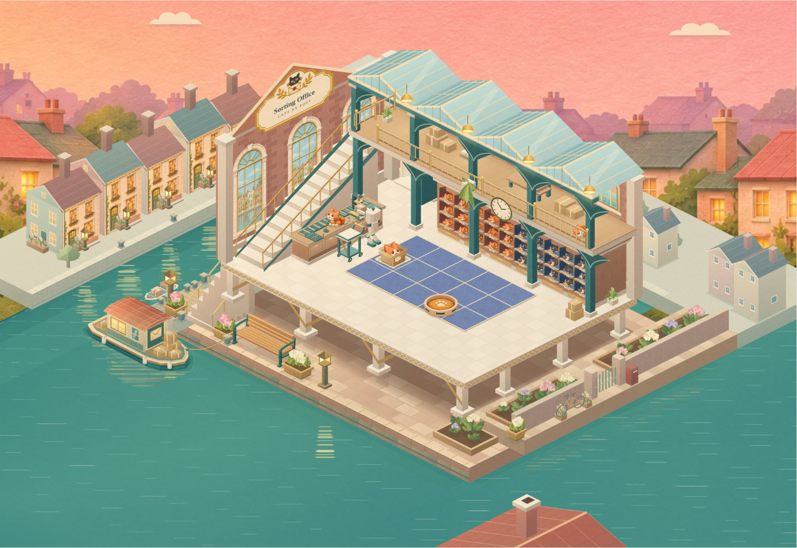

A proper entrance from the canal
The quay steps now reach a supported landing and an open doorway. Both doors push outwards, with room for their complete swings. Inside, a clear landing leads into the office and up to the gallery.

The entrance and its connected stairs. The nearer door folds back against the outside wall.
The complete updated study.
Before: windows beside the interior flight, with no actual entrance at the outside steps. This is the previous room view in the game renderer.